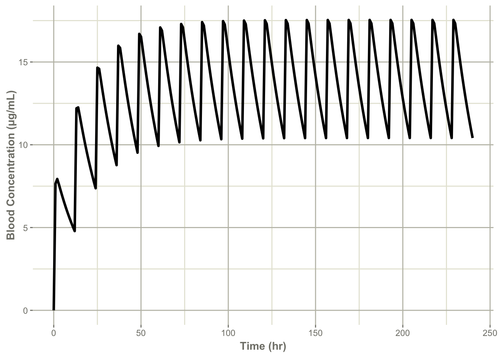
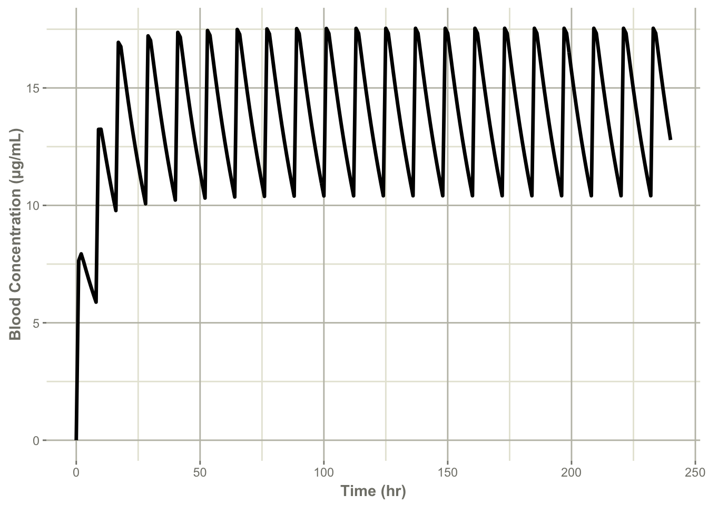
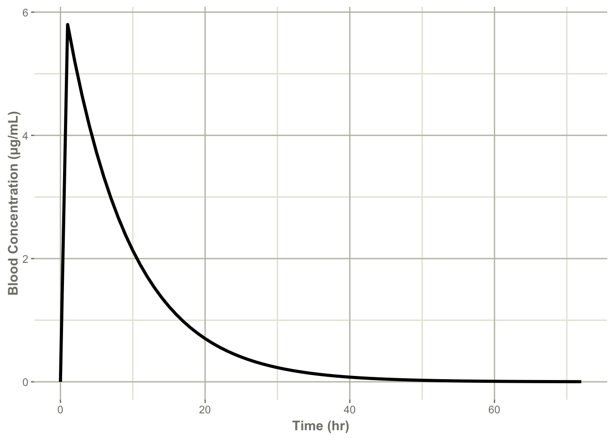

Chapter 4 学生実習用ミニ課題
4.1 イーケプラ錠の服用タイミング
病棟看護師より以下の相談あり。
現在は15時。
イーケプラ錠250mg 1日2錠 分2 朝夕食後の新規処方が出たが、1回目を今から服用させたい。
本日2回目の服用は何時頃が良いか？
90歳，女性，155 cm，45 kg
血清クレアチニン値：0.63 mg/dL
AST：16 U/L，ALT：9 U/L，T-BIL：0.5 mg/dL
※ 架空の患者データです。
必要最低限の情報から即答する
15時（空腹時）に服用することは妥当か？
添付文書の記載
「空腹時と比べて、食後投与時ではtmaxが約1.3時間延長し、Cmaxは30％低下したが、AUCは同等であった。」
食事の影響は小さい。15時（空腹時）服用は問題無し。
1回250mg、1日2回という用量用法は妥当か？
肝機能関連検査値から肝機能は問題無いと考える。
年齢、性別、体重、血清クレアチニン値のデータから推定クレアチニンクリアランスを計算すると、42.16 mL/minとなる。
添付文書より、上記用量用法は妥当であり、また、増量余地のある用量であると考えられる。
（本患者腎機能における最高投与量：1回750mg 1日2回）
以上のデータから、 15時に服用し、当日中にもう1回服用することは問題無いと考えられる。
翌日の服用が朝食後（7:30くらい）であることを考えると、その中間あたりの23時くらいに服用するのが妥当だが、就寝前服用で問題無いだろう。
より詳細に検討してみる
イーケプラの薬物動態パラメータを利用し、薬物血中濃度推移を予測して検討する。
薬物動態パラメータ
- 分布容積（Vd）：0.64 L/kg × 45 kg = 28.8 L
- 生物学的利用率（BA）：1
- 半減期（T1/2）：13.5 hr（腎機能障害患者および高齢者のデータから仮定）
半減期と投与間隔（\(\tau\) = 12 hr）の関係から、イーケプラは定常状態に入る薬剤であると分かる。
- 消失速度定数（Kel）：0.0513 hr-1（\(Kel=\frac{0.693}{T_{1/2}}\)から計算）
Kelから蓄積率（R）を計算してみると、\(R=\frac{1}{1-e^{{-Kel}\cdot\tau}}\)から2.17、つまり、定常状態の血中濃度は単回投与の血中濃度の約2.17倍となることが分かる。
- 吸収速度定数（Ka）：2.44 hr-1
摂食時：2.44、空腹時：4.80のデータから、空腹時服用の方が速やかに吸収されることが分かる。どちらも十分に大きい値であるため、今回は2.44を用いる。
以上の薬物動態パラメータを利用して、R言語で1-コンパートメントモデルのプログラムを組み、薬物血中濃度推移をシミュレーションしてみる。
対象患者が1回250mg、12時間毎に服用した場合
ev <- eventTable(amount.units='mg', time.units='hours')
ev$add.dosing(dose=250, nbr.doses=20, dosing.interval=12)
ev$add.sampling(0:240)
x <- mod1 %>% solve(theta, ev, inits)
plot(x, conce) + ylab("Blood Concentration (µg/mL)") + xlab("Time (hr)")
対象患者が最初の3回までは8時間毎、その後は12時間毎に服用した場合
ev2 <- eventTable(amount.units='mg', time.units='hours')
ev2$add.dosing(dose=250, nbr.doses=3, dosing.interval=8)
ev2$add.dosing(dose=250, nbr.doses=18, start.time=28, dosing.interval=12)
ev2$add.sampling(0:240)
x2 <- mod1 %>% solve(theta, ev2, inits)
plot(x2, conce) + ylab("Blood Concentration (µg/mL)") + xlab("Time (hr)")
定常状態に入るまでの時間が短くなるが、問題の無い血中濃度推移であることが分かる。
よって、病棟看護師に返答した内容は妥当と考える。
4.2 レボフロキサシン点滴の点滴時間
通常、レボフロキサシン点滴は、1回500mgを約60分間かけて点滴静注する。腎機能低下患者には1回250mgを点滴静注する場合があるが、この場合にはどれくらいの時間をかけて点滴するのが妥当だろうか？
（以前、メーカーの方に伺ったことがあるが、その際には250mgであっても60分かけるようにとの返答だった）
薬物動態パラメータを用いてシミュレーションしてみる。
模擬患者データおよび薬物動態パラメータ
250mgを60分かけて点滴した場合
library(RxODE)
library(units)
library(tidyverse)
mod <- RxODE({
conce = centr/vd;
d/dt(centr) = - kel*centr;
})
theta <- c(vd=vd, kel=kel)
inits <- c(centr=0)
ev <- eventTable(amount.units='mg', time.units='hours')
ev$add.dosing(dose=500, nbr.doses=1, start.time =0, rate=500)
ev$add.sampling(0:72)
x <- mod %>% solve(theta, ev, inits)
plot(x, conce) + ylab("Blood Concentration (µg/mL)") + xlab("Time (hr)")